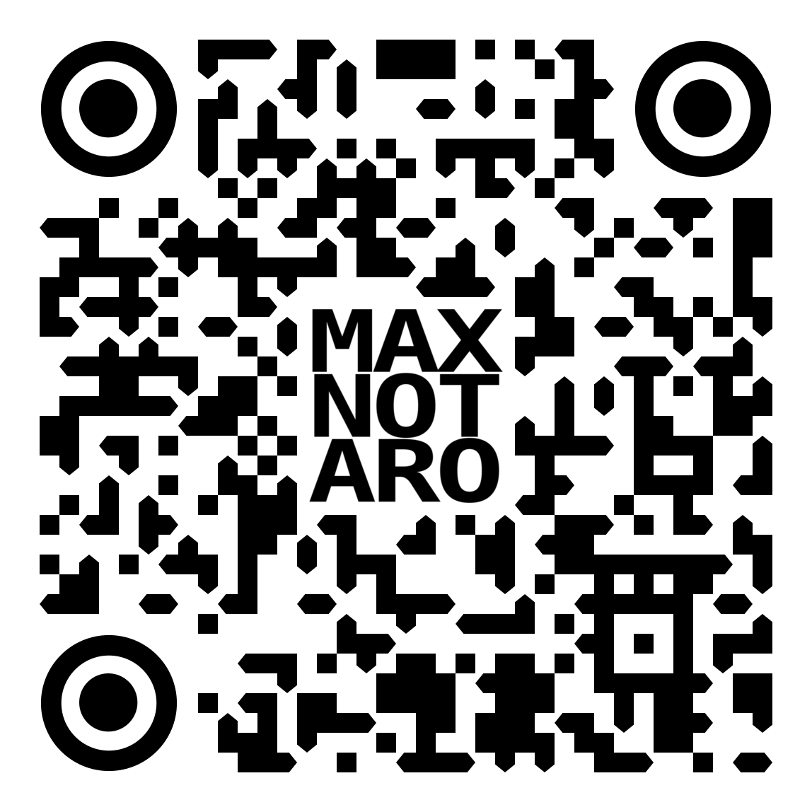

Full-Stack Developer · GNU/Linux Consultant · Videomaker · Creative Technologist
GNU-Linux consultancy in GNU/Linux-based systems: system administration, shell scripting, servers, databases, and networks.
Web Design building responsive and interactive web pages using HTML, CSS, and Javascript. Experienced with modern frameworks such as ReactJS for dynamic user interfaces.
Software Engineering Experience in low-level programming and project development using the C lenguage, with a focus on efficient code structure and problem-solving. Also developing in NodeJS using libraries like for web scraping and testing, jimp for batch processing images or FS for file system automation
Robotics Art Exploring creative use of Arduino for the creation of interactive instruments for the Plantavibras proyect.
Social